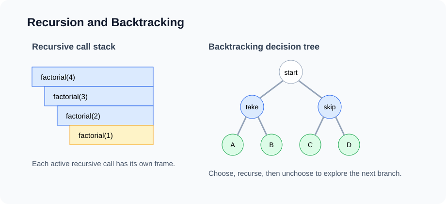

Lesson 6
Recursion, Backtracking, and Divide and Conquer
Recursion solves a problem by reducing it to smaller versions of the same problem. Backtracking uses recursion to explore choices. Divide and conquer uses recursion to split a problem, solve independent pieces, and combine the results.

Example first: factorial
Factorial is not the most exciting algorithm, but it is a clean first example because the mathematical definition is recursive:
0! = 1
n! = n * (n - 1)! for n > 0The Java code follows the definition.
static int factorial(int n) {
if (n == 0) return 1;
return n * factorial(n - 1);
}This method has two parts: a base case and a recursive case. Without a base case, recursion does not stop. Without progress toward the base case, recursion still does not stop.
The call stack
Every method call gets a stack frame. A recursive method creates many stack frames, one for each active call.
factorial(4)
returns 4 * factorial(3)
returns 3 * factorial(2)
returns 2 * factorial(1)
returns 1 * factorial(0)
returns 1After the base case returns, the calls finish in reverse order. This is why recursion often feels like "going down" and then "coming back up."
| Method | Time | Auxiliary space | Reason |
|---|---|---|---|
| Recursive factorial | O(n) | O(n) | n calls on stack |
| Iterative factorial | O(n) | O(1) | constant local variables |
The recursive contract
A recursive method should have a contract: a sentence describing what the method returns or accomplishes. Trust the contract for smaller inputs, then use it to solve the current input.
static int sum(int[] a, int index) {
if (index == a.length) return 0;
return a[index] + sum(a, index + 1);
}
Contract: sum(a, index) returns the sum of elements from index to the end. If we
trust that sum(a, index + 1) gives the rest, then the current answer is
a[index] + rest.
What is the smallest input we can answer directly?
How does each recursive call move closer to the base case?
Recursion on linked lists
Linked lists are naturally recursive: a list is either empty, or it is one node followed by another list.
static int length(Node head) {
if (head == null) return 0;
return 1 + length(head.next);
}
Contract: length(head) returns the number of nodes starting at head. This is elegant,
but remember the stack space is O(n).
Recursion tree for Fibonacci
Some recursive methods branch into multiple calls. Fibonacci is the warning example.
static int fibSlow(int n) {
if (n <= 1) return n;
return fibSlow(n - 1) + fibSlow(n - 2);
}This recomputes the same subproblems many times.
fib(5)
fib(4)
fib(3)
fib(2)
fib(1)
fib(2)
fib(3)
fib(2)
fib(1)
The time is exponential, roughly O(2^n). Later, dynamic programming will fix this by remembering
answers to repeated subproblems.
Backtracking: recursion over choices
Backtracking is used when the solution is built through a sequence of choices. At each step, choose one option, recurse, then undo the choice so another option can be tried.
BACKTRACK(state):
if state is complete:
record answer
return
for choice in choices(state):
if choice is invalid:
continue
make choice
BACKTRACK(next state)
undo choice
The undo step is essential. In Java, it often means path.remove(path.size() - 1) or setting a
used[i] flag back to false.
Example: subsets
Given [1, 2, 3], generate all subsets. For each number, choose include or skip.
static List<List<Integer>> subsets(int[] nums) {
List<List<Integer>> ans = new ArrayList<>();
buildSubsets(nums, 0, new ArrayList<>(), ans);
return ans;
}
static void buildSubsets(
int[] nums,
int index,
List<Integer> path,
List<List<Integer>> ans) {
if (index == nums.length) {
ans.add(new ArrayList<>(path));
return;
}
path.add(nums[index]);
buildSubsets(nums, index + 1, path, ans);
path.remove(path.size() - 1);
buildSubsets(nums, index + 1, path, ans);
}
State sentence: we have decided what to do with elements before index, and path
stores the subset built so far.
There are 2^n subsets. If we copy each subset into the answer, output size contributes up to
O(n * 2^n) total work.
Example: permutations
A permutation chooses every number exactly once. We need to remember which indices are already used.
static List<List<Integer>> permutations(int[] nums) {
List<List<Integer>> ans = new ArrayList<>();
boolean[] used = new boolean[nums.length];
permute(nums, used, new ArrayList<>(), ans);
return ans;
}
static void permute(
int[] nums,
boolean[] used,
List<Integer> path,
List<List<Integer>> ans) {
if (path.size() == nums.length) {
ans.add(new ArrayList<>(path));
return;
}
for (int i = 0; i < nums.length; i++) {
if (used[i]) continue;
used[i] = true;
path.add(nums[i]);
permute(nums, used, path, ans);
path.remove(path.size() - 1);
used[i] = false;
}
}
There are n! permutations. This is not inefficient; it is unavoidable if the task asks us to list
every permutation.
Example: combination sum
Given candidate numbers and a target, find combinations that sum to the target. We can reuse a candidate multiple times.
static List<List<Integer>> combinationSum(int[] nums, int target) {
List<List<Integer>> ans = new ArrayList<>();
Arrays.sort(nums);
combo(nums, target, 0, new ArrayList<>(), ans);
return ans;
}
static void combo(
int[] nums,
int remaining,
int start,
List<Integer> path,
List<List<Integer>> ans) {
if (remaining == 0) {
ans.add(new ArrayList<>(path));
return;
}
for (int i = start; i < nums.length; i++) {
if (nums[i] > remaining) break;
path.add(nums[i]);
combo(nums, remaining - nums[i], i, path, ans);
path.remove(path.size() - 1);
}
}
The start index prevents duplicate combinations in different orders. Sorting allows pruning with
break once the candidate is too large.
Pruning
Pruning means stopping a branch early because it cannot lead to a valid answer. Pruning does not change the worst-case exponential nature of many backtracking problems, but it can make real inputs much faster.
if (currentSum > target) {
return; // no need to continue this branch
}Good pruning depends on knowing the problem constraints. For example, the combination-sum pruning above works because candidates are positive and sorted.
Backtracking complexity
Backtracking complexity is often best understood through the decision tree.
| Problem | Branching idea | Number of outputs |
|---|---|---|
| Subsets | Include or skip each item | 2^n |
| Permutations | Choose one unused item at each depth | n! |
| Binary strings length n | Choose 0 or 1 at each position | 2^n |
| Combinations size k | Choose k of n items | C(n, k) |
If a problem asks us to output exponentially many answers, exponential time is expected. The goal is to avoid unnecessary work beyond the output size.
Divide and conquer
Divide and conquer also uses recursion, but it is different from backtracking. Instead of exploring choices, it splits the input into smaller independent subproblems.
DIVIDE-AND-CONQUER(problem):
if problem is small:
solve directly
split problem into smaller parts
solve each part recursively
combine the resultsExample: recursive binary search
static int binarySearch(int[] a, int target) {
return binarySearch(a, target, 0, a.length - 1);
}
static int binarySearch(int[] a, int target, int lo, int hi) {
if (lo > hi) return -1;
int mid = lo + (hi - lo) / 2;
if (a[mid] == target) return mid;
if (a[mid] < target) return binarySearch(a, target, mid + 1, hi);
return binarySearch(a, target, lo, mid - 1);
}
Time is O(log n). Recursive stack space is also O(log n). The iterative version from
Lesson 4 uses O(1) auxiliary space.
Example: merge sort
Merge sort recursively sorts two halves, then merges them.
static void mergeSort(int[] a) {
int[] aux = new int[a.length];
mergeSort(a, aux, 0, a.length);
}
static void mergeSort(int[] a, int[] aux, int lo, int hi) {
if (hi - lo <= 1) return;
int mid = lo + (hi - lo) / 2;
mergeSort(a, aux, lo, mid);
mergeSort(a, aux, mid, hi);
merge(a, aux, lo, mid, hi);
}
Recurrence: T(n) = 2T(n/2) + O(n). By recursion tree or Master Theorem, time is
O(n log n). Auxiliary array space is O(n); recursion stack is O(log n).
Recursion vs iteration
Recursion is not always better. Use recursion when the problem structure is naturally recursive: trees, divide-and-conquer, search spaces, and backtracking. Use iteration when a simple loop is clearer and avoids stack overhead.
| Situation | Usually prefer | Why |
|---|---|---|
| Simple scan | Iteration | Less overhead, easier space analysis |
| Binary tree traversal | Recursion first | Tree structure is recursive |
| Generate all choices | Backtracking | Decision tree is recursive |
| Very deep input | Iteration or explicit stack | Avoid stack overflow |
Common mistakes
- Writing recursion without a clear contract.
- Forgetting the base case or failing to make progress.
- Mutating
pathin backtracking but forgetting to undo the mutation. - Adding
pathdirectly to answers instead of copying it. - Ignoring recursion stack space.
- Using recursion for a simple loop where it adds no clarity.
Analysis routine
ANALYZE-RECURSION(problem):
1. Write the recursive contract in one sentence.
2. Identify the base case.
3. Identify how each call makes progress.
4. Count the number of calls or draw the recursion tree.
5. Count work per call.
6. Include recursion stack space.
7. If it outputs many answers, include output size.
8. For backtracking, define path, choices, and undo step.In-class exercises
- Trace
factorial(4)on the call stack. - Write recursive and iterative versions of array sum.
- Generate all binary strings of length n.
- Generate all subsets of an array.
- Generate all permutations of distinct integers.
- Solve recursive binary search and compare stack space with the iterative version.
- Explain merge sort using a recursion tree.
Homework: GitHub submission
Create a folder named lesson-06-recursion in the course homework repository.
lesson-06-recursion/
README.md
src/
RecursionBasics.java
BacktrackingProblems.java
DivideAndConquer.java
Main.java
analysis/
recursion-analysis.mdRequired methods
- Recursive
sum(int[] a). - Recursive binary search.
subsets(int[] nums).permutations(int[] nums).combinationSum(int[] nums, int target).- Merge sort with an auxiliary array.
README requirements
- For each recursive method, write the recursive contract.
- State the base case and progress step.
- State time and auxiliary space.
- For backtracking methods, define
path, choices, and undo step. - Include at least two tests for each method.
Optional challenge
Implement N-Queens for an n x n board. Use sets or boolean arrays to track occupied columns and
diagonals.